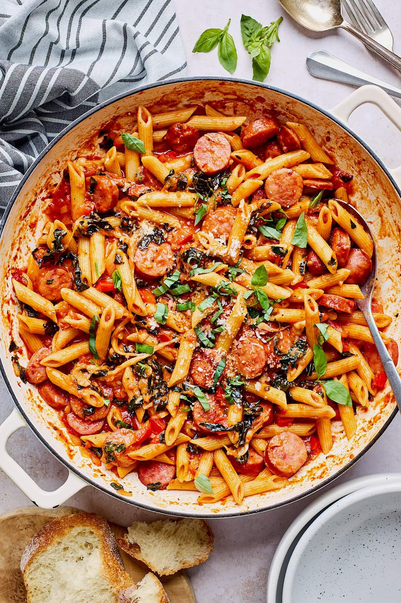

Ramen

Description
A delicious bowl of pasta, with sausage for protein, and one or more servings of vegetables. Depends on how much you eat, and you're not going to want to stop!
Ingredients
- Penne pasta
- Sweet italian sausage
- Jar of pasta sauce or sauce made from scatch (if you're fancy)
- Heavy cream
- Veggies to taste, we recommend a bit of spinach and peas
Steps
- Set a pot of water to boil, prepare to boil pasta about ten minutes before sauce is finished
- Remove skin from sausage, put it pan and mash into pieces according to preference
- Brown sausage until mostly cooked
- Poor pasta sauce on top
- Add heavy cream to taste, at least 1/4 cup
- Add veggies
- Heat sauce until it bubbles
- Combine pasta with sauce
- Enjoy!